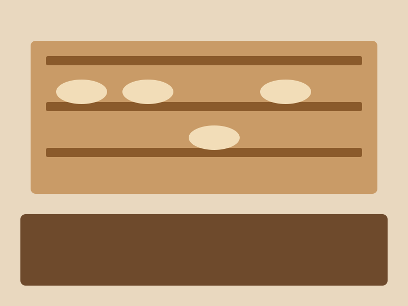

Unser Laden
Wir backen mit Mehl aus der Region und viel Zeit für den Teig.
Samstags gibt es Hefezopf.
Telefon: 07031 000000

Neuigkeiten
Gerade gibt es keine Neuigkeiten.
Brot, Brezeln und Kuchen aus dem Holzofen – jeden Morgen ab 6 Uhr.
Wir backen mit Mehl aus der Region und viel Zeit für den Teig.
Samstags gibt es Hefezopf.
Telefon: 07031 000000

Gerade gibt es keine Neuigkeiten.